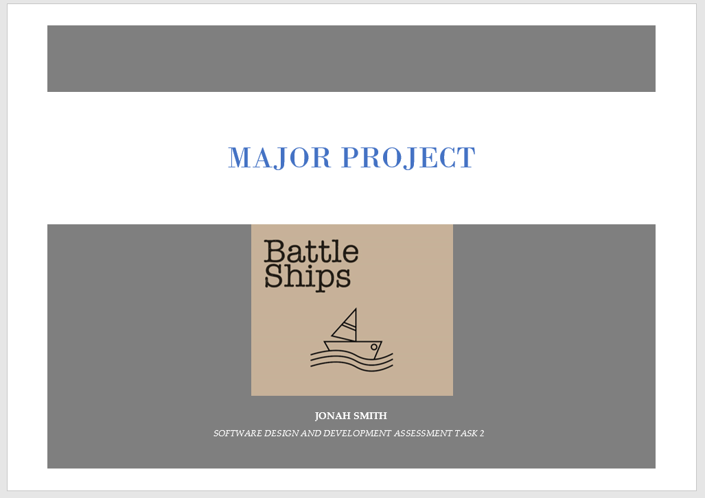
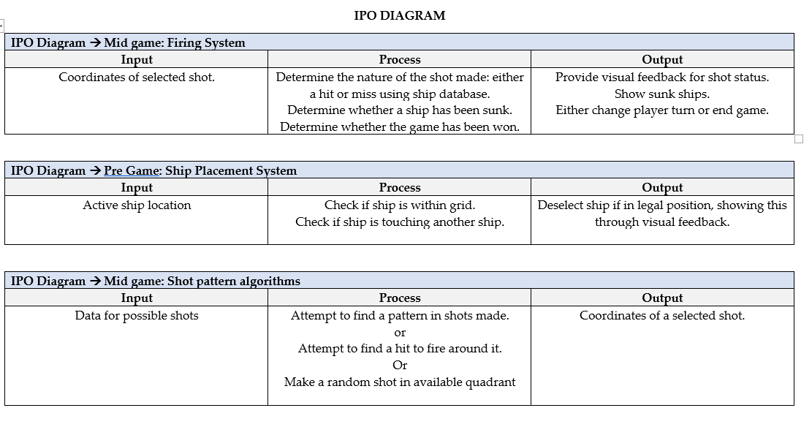
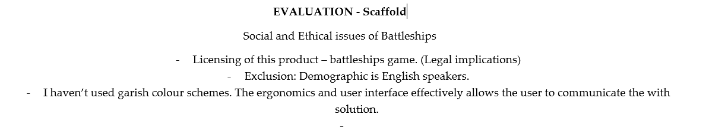

After using many debug.print statements in a lot of different locations I found the error to be and endless loop for my quadrant module. Further proved when I simulated 50 games without replicating the error one in spectator mode without the quadrant module and it only took the 5th and 3rd attempts one separate instances with the module activated to replicate the error. Unfortunately, I am entirely unsure as to how one could fix it. Owing to the fact the project is due in a week and the module has little impact on the game I simply removed it which should hopefully solve the error in logic. On the other hand, I am very close to completing the written report and am in the process of compiling everything together. I enjoyed the project however I think visual studio is limited in its ability for game creation – something its obviously not primarily designed for – none the less it was certainly an entertaining and exciting major project whose ending is bitter sweet.

IPO
Post by Jonah Smith, May 16, 2017.
Instead of making a single IPO chart I decided to divide it into three sections which I feel comprise the game and have the most logic paths: the firing system, ship placement system, shot pattern algorithms. I feel therefore that I can most accurately describe the system and modules with the system I have created. Unfortunately, when my game was being tested a bug emerged that I had never seen before. From what I can guess it emerges on either the user or enemy’s hit on the last remaining ship square and freezes the game in what appears to be an endless loop. Frustratingly, I struggle to find much correlation or pinpoint the cause of it on the rare occasions when it does appear. My last task appears to be to solve this quite annoying and circumstantial error.

Social Evaluation
Post by Jonah Smith, May 8, 2017.
Although my GANNT chart planned the evaluation to be written in January have left its completion to the end of my project when I have a more thorough understanding of the social implications of Battleships. I aim to consider the legal implications for the licensing of Battleships, potential exclusionary factors such as language, as well as requirements of sustainable ergonomics.

Diagram modifications
Post by Jonah Smith, May 01, 2017.
I feel my modified DFD more accurately reflects the crux of my system. I used three processes, two entities and two data sources to describe the main gameplay components of Battleships.